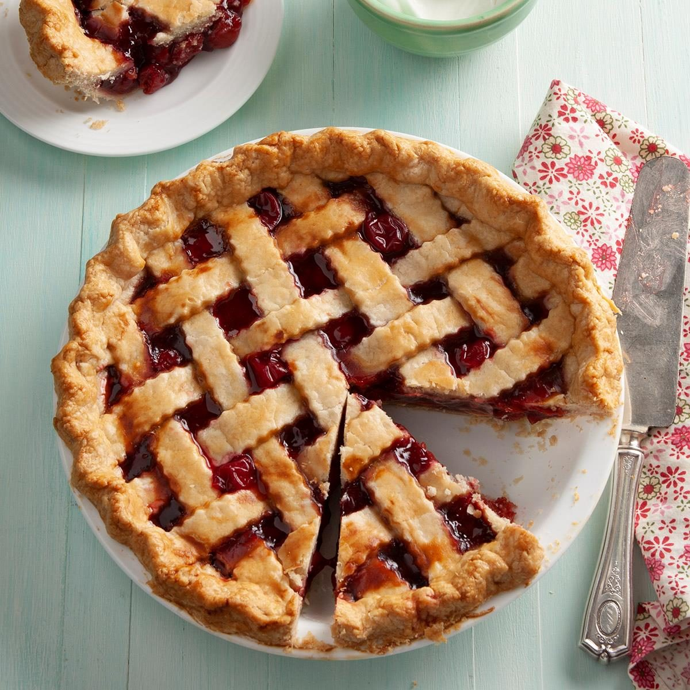

Cherry pie recipe!

This homemade cherry pie is perfectly sliceable with a thick almond-hinted
cherry pie filling and a golden brown buttery flaky pie crust.
Ingridients:
- Homemade Pie Crust
- 4 and 1/2 cups halved & quartered pitted fresh cherries
- 2/3 cup (135g) granulated sugar
- 1/4 cup (28g) cornstarch
- 1 Tablespoon (15ml) lemon juice
- 1 teaspoon pure vanilla extract
- 1/4 teaspoon almond extract
- 1 Tablespoon (14g) cold unsalted butter, cut into small cubes
- egg wash: 1 large egg beaten with 1 Tablespoon (15ml) milk
Steps:
- The crust: Prepare either pie crust recipe through step 5.
- Make the filling: In a large bowl, stir the cherries, sugar, cornstarch, lemon juice, vanilla, and almond extract together until thoroughly combined.
- Roll out the chilled pie dough: On a floured work surface, roll out one of the discs of chilled dough.
- Pour the few Tablespoons of leftover juice into a small saucepan over low heat. Cook and stir for 3-4 minutes or until juice has slightly reduced and thickened.
- Preheat oven to 400°F (204°C).
- Arrange the lattice: Remove the other disc of chilled pie dough from the refrigerator. Roll the dough into a circle that is 12 inches diameter.
- Lightly brush the top of the pie crust with the egg wash. Sprinkle the top with coarse sugar, if using.
- Place the pie onto a large baking sheet and bake for 20 minutes. Keeping the pie in the oven, turn the temperature down to 375°F (190°C) and bake for an additional 30-40 minutes
- Remove pie from the oven, place on a cooling rack, and cool for at least 3-4 hours before slicing and serving. Filling will be too juicy if the pie is warm when you slice it.
- Cover leftovers tightly and store in the refrigerator for up to 5 days.